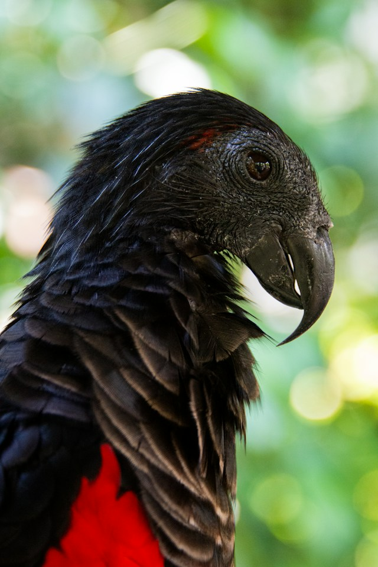

En sjelden fugl fra Ny-Guienas regnskogen
Børstepapegøye også kjent som "Dracula papegøyen" er en rød og svart papegøye som kun finnes naturlig på øyen Ny-Guiena. Ny-Guiena er den nest største øyen i verden etter Grønnland. Fuglen sin praktfulle kontrast mellom sort og røde fjær fanget opperksomheten min.
Til tross for utseendet består fuglens kosthold nesten utelukkende av frukt, som fiken og mango. Den har et fjærløst hode slik at klissete fiken sevje ikke skal feste seg til anskitet mens den spiser. Børstepapegøyen spiller også en viktig økologisk rolle i Ny-Guiena ved å spre frøene over større områder gjennom avføringen. Dette bidrar til nye trær og planter kan vokse opp, noe som holder regnskogens økosystem sunt og i balanse.
Dessuten har den et helt unikt og isolert slekstre uten nære nålevende slektninger, noe som gjør den til en enslig grein i fuglenes verden. Dersom arten skulle forsvinne, ville jorden miste en helt unik evolusjonær slektslinje som ikke finnes hos noen anne fugl.
Begge kjønnene av børstepapegøyen ser nesten identisk ut bortsett fra at hannen har en rød flekk rett bak øyet (som illustrert på bildet over), noe som hunn-papegøyen ikke har.
Fuglens sitt utseende har også ført til at folk jakter på dem for å selge de røde og sorte fjærene. Samtidig har reinskogen i Ny-Guiena opplevd økt palmeoljeproduksjon, gruvedrift og tømmerhogst. Dette har ført til at fuglen sitt habitat er truet og den er klassifisert som "Vulnerable" eller sårbar på IUCN Red List over utrydningstruede arter. Arter som er klassifiert som "sårbar" har en 10% risiko for å dø ut innen 100 år.
Dracula papegøye
| Kategori | Fakta |
|---|---|
| Navn: | Børstepapegøye |
| Levested: | Ny-Guinea |
| Størrelse: | Sirka 46 cm og veier omlag 680-800 g |
| Diett: | Fiken og mangos |
| Status: | Sårbar |